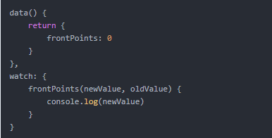
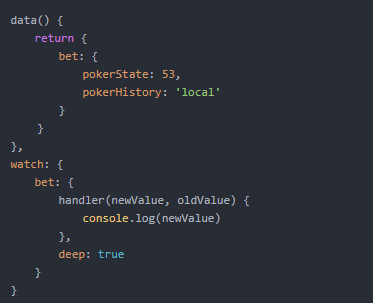
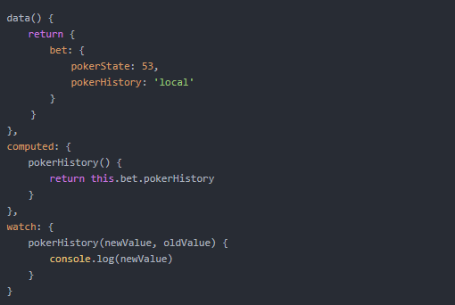

1、普通的watch

2、对象属性的watch：
对象和数组都是引用类型，引用类型变量存的是地址，地址没有变，所以不会触发watch。这时我们需要进行深度监听，就需要加上一个属性 deep，值为 true

注意：只要对象的属性发生变化，就会执行handler函数；如果将监听对象中的具体属性，则可以通过计算属性computed作为中间层进行监听，例如：

Watch和computed的区别
watch用于观察和监听页面上的vue实例，当你需要在数据变化响应时，执行异步操作，或高性能消耗的操作，那么watch为最佳选择
可以关联多个实时计算的对象，当这些对象中的其中一个改变时都会触发这个属性
具有缓存能力，所以只有当数据再次改变时才会重新渲染，否则就会直接拿取缓存中的数据。